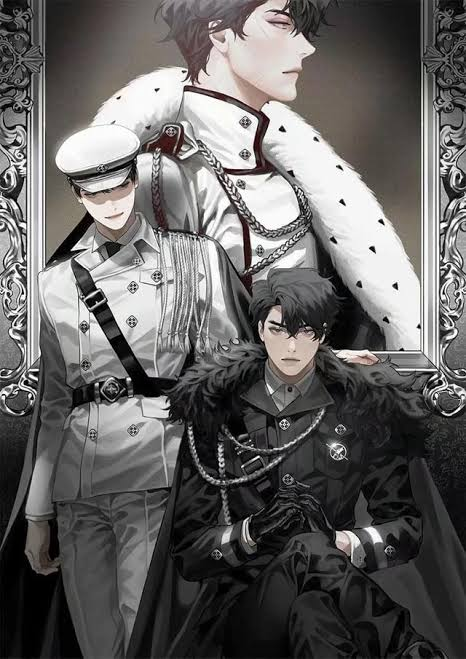

Yoo Joonghyuk é o protagonista do livro que Kim Dokja leu durante 10 anos. Possuidor do estigma da Regressão, sempre que morre, o tempo volta para o início dos cenários. Apesar do seu imenso poder de combate com a espada, carrega o fardo psicológico de ver os seus companheiros morrerem centenas de vezes a cada nova vida.
